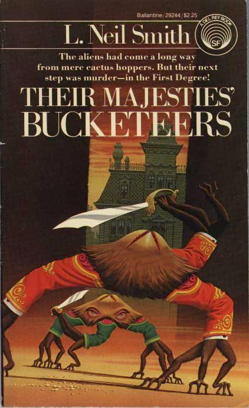

Their Majesties' Bucketeers
by L. Neil Smith
On an alien world whose furry, nine-legged crablike inhabitiants are just entering their own "Age of Invention", a royal "fireman" must create the art of criminal detection from scratch, in order to solve the murder of his favorite teacher.
New York: A Del Rey Book Published by Ballantine Books, 1981.
182 pages, mass-market paperback
Library of Congress Catalog Card Number: [not given]
ISBN 0-345-29244-8
First Edition: August 1981
Cover art by Ralph Brillhart